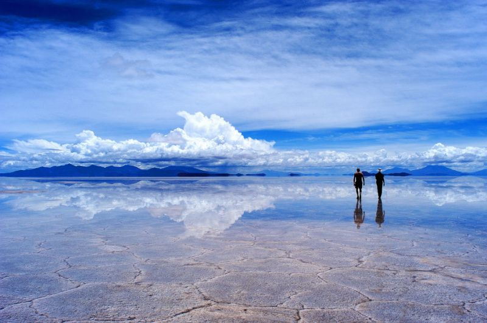
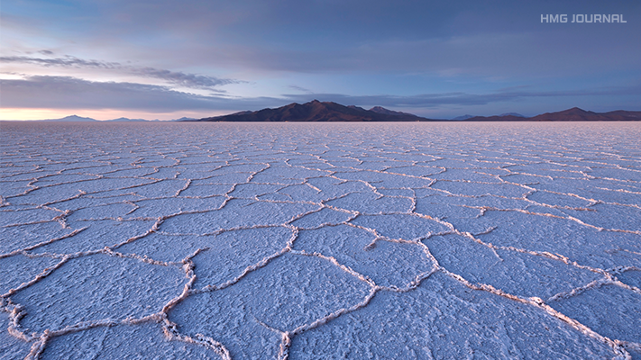

볼리비아 우유니 소금 사막
볼리비아에 위치한 세계 최대의 소금 사막. 지도 한가운데 새하얀 것들이 모두 소금이다.우유 사막 정확히는 사막이 아니라 호수다. 오랜세월에 걸쳐 호수의 소금들이 호수 표면에 결정화되어서 지금의 사막처럼 보이는 형상이 된 것이다. 건기에 호수의 물이 말라서 사막처럼 보이긴 해도 소금사막 밑에는 여전히 물이 존재하고 있다. 우유니의 환상적인 배경도 소금사막의 표피층에 있는 물에 반사되는 것이다.


원래 우유니 사막이 있던 지역은 바다였다. 그러다 태평양 동쪽에 있는 해양 지각판인 나즈카 판이 남미 대륙판과 부딪치고, 이 과정에서 나즈카 판이 남미 대륙판 밑으로 밀려들어가면서 바다 속에 있던 땅이 해수면 위로 솟아올라 안데스 산맥을 형성했고, 우유니 사막이 있던 지역은 거대한 내해가 되었다. 그리고 바닷물이 증발하면서 말라붙고, 바닷물에 녹아 있던 소금이 남아서 소금 사막이 형성된 것이다. 이런 이유로 우유니 사막 주변에는 같은 이유로 형성된 크고 작은 소금 사막이 존재하고, 남쪽 아르헨티나에도 몇 곳 있다.